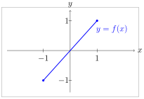
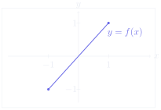
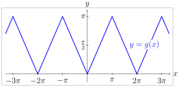
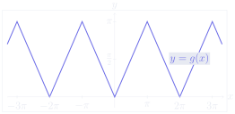

第 3 次习题课 反三角函数¶
TD n°3 — Fonctions trigonométriques réciproques
CORRIGÉ · 参考解答
阅读说明
每段先列法语原文；其下缩进、带深蓝竖条的小字号段落为中文翻译。加粗为关键词，括号内为中文释义。
Exercices à préparer 预备练习¶
Exercice 1 练习 1¶
identité ou non 是否为恒等式
Étudier et représenter les fonctions suivantes :
研究并作出下列函数的图像：
-
\(f : x \mapsto \cos(\arccos x)\)
-
\(f : x \mapsto \cos(\arccos x)\)
La fonction \(\arccos\) est définie sur \([-1,1]\) et la fonction \(\cos\) est définie sur \(\mathbb{R}\) donc la fonction \(f\) est définie sur \([-1,1]\).
函数 \(\arccos\) 定义在 \([-1,1]\) 上，函数 \(\cos\) 定义在 \(\mathbb{R}\) 上， 因此函数 \(f\) 定义在 \([-1,1]\) 上。
Comme \(\arccos : [-1,1] \to [0,\pi]\) et \(\cos : [0,\pi] \to [-1,1]\), on a \(\forall x \in [-1,1],\ f(x) = x\).
由于 \(\arccos : [-1,1] \to [0,\pi]\) 且 \(\cos : [0,\pi] \to [-1,1]\)， 故 \(\forall x \in [-1,1]\)，\(f(x) = x\)。
Ainsi \(f\) est la restriction de l'application identité à l'intervalle \([-1,1]\).
因此 \(f\) 是恒等映射在区间 \([-1,1]\) 上的限制。
 
-
\(g : x \mapsto \arccos(\cos x)\)
-
\(g : x \mapsto \arccos(\cos x)\)
On a \(\cos : \mathbb{R} \to [-1,1]\) et \(\arccos : [-1,1] \to \mathbb{R}\), donc \(g\) est définie sur \(\mathbb{R}\).
有 \(\cos : \mathbb{R} \to [-1,1]\) 且 \(\arccos : [-1,1] \to \mathbb{R}\)， 因此 \(g\) 定义在 \(\mathbb{R}\) 上。
De plus \(\cos\) est \(2\pi\) périodique et paire, donc \(g\) aussi.
此外 \(\cos\) 以 \(2\pi\) 为周期且为偶函数，因此 \(g\) 亦然。
On étudie donc \(g\) sur l'intervalle \([0,\pi]\) puis on complète par parité puis par périodicité.
于是先在区间 \([0,\pi]\) 上研究 \(g\)，再利用奇偶性、然后利用周期性补全。
On a
有
donc, \(\forall x \in [0,\pi],\ g(x) = x\).
因此 \(\forall x \in [0,\pi]\)，\(g(x) = x\)。
 
Exercice 2 练习 2¶
étude détaillée 详细研究
On veut montrer que : \(\forall x \in \mathbb{R},\ \arcsin\left(\dfrac{x}{\sqrt{1+x^2}}\right) = \arctan x\).
我们希望证明：\(\forall x \in \mathbb{R}\)， \(\arcsin\left(\dfrac{x}{\sqrt{1+x^2}}\right) = \arctan x\)。
-
Soit \(x \in \mathbb{R}\). Montrer que \(\dfrac{x}{\sqrt{1+x^2}} \in \,]-1,1[\).
-
设 \(x \in \mathbb{R}\)。证明 \(\dfrac{x}{\sqrt{1+x^2}} \in \,]-1,1[\)。
Pour tout \(x \in \mathbb{R}\),
对任意 \(x \in \mathbb{R}\)，
Donc
因此
c'est-à-dire
即
-
Déterminer l'ensemble \(\left\{\arcsin\left(\dfrac{x}{\sqrt{1+x^2}}\right),\ x \in \mathbb{R}\right\}\).
-
确定集合 \(\left\{\arcsin\left(\dfrac{x}{\sqrt{1+x^2}}\right),\ x \in \mathbb{R}\right\}\)。
Lorsque \(x\) parcourt \(\mathbb{R}\), la quantité \(\dfrac{x}{\sqrt{1+x^2}}\) parcourt exactement l'intervalle \(]-1,1[\).
当 \(x\) 遍历 \(\mathbb{R}\) 时，量 \(\dfrac{x}{\sqrt{1+x^2}}\) 恰好遍历区间 \(]-1,1[\)。
De plus \(\arcsin\) est strictement croissante et continue sur \([-1,1]\), donc
此外 \(\arcsin\) 在 \([-1,1]\) 上严格递增且连续，因此
-
Soit \(\theta \in \left]-\dfrac{\pi}{2},\dfrac{\pi}{2}\right[\). Exprimer \(\sin\theta\) en fonction de \(\tan\theta\).
-
设 \(\theta \in \left]-\dfrac{\pi}{2},\dfrac{\pi}{2}\right[\)。 用 \(\tan\theta\) 表示 \(\sin\theta\)。
Comme \(\theta \in \left]-\frac{\pi}{2},\frac{\pi}{2}\right[\), on a \(\cos\theta > 0\).
由于 \(\theta \in \left]-\frac{\pi}{2},\frac{\pi}{2}\right[\)，有 \(\cos\theta > 0\)。
De plus, \(\cos^2\theta + \sin^2\theta = 1\), donc \(1 + \dfrac{\sin^2\theta}{\cos^2\theta} = \dfrac{1}{\cos^2\theta}\), ou encore \(\cos^2\theta = \dfrac{1}{1+\tan^2\theta}\).
此外 \(\cos^2\theta + \sin^2\theta = 1\)，因此 \(1 + \dfrac{\sin^2\theta}{\cos^2\theta} = \dfrac{1}{\cos^2\theta}\)， 亦即 \(\cos^2\theta = \dfrac{1}{1+\tan^2\theta}\)。
D'où
由此
Ainsi,
因此，
-
Conclure.
-
得出结论。
Soit \(x \in \mathbb{R}\). Posons
设 \(x \in \mathbb{R}\)。令
Alors \(\theta \in \left]-\frac{\pi}{2},\frac{\pi}{2}\right[\) et \(\tan\theta = x\). D'après la question précédente,
则 \(\theta \in \left]-\frac{\pi}{2},\frac{\pi}{2}\right[\) 且 \(\tan\theta = x\)。根据上一问，
Or \(\theta \in \left]-\frac{\pi}{2},\frac{\pi}{2}\right[\), donc \(\arcsin(\sin\theta) = \theta\). Par suite,
而 \(\theta \in \left]-\frac{\pi}{2},\frac{\pi}{2}\right[\)，故 \(\arcsin(\sin\theta) = \theta\)。从而
On a donc bien
于是确实有
Exercice 3 练习 3¶
simplifier des fonctions composées 化简复合函数
Préciser le domaine de définition des expressions suivantes, puis les simplifier.
指出下列表达式的定义域，然后化简。
-
\(\cos(\arctan x)\)
-
\(\cos(\arctan x)\)
Les fonctions \(x \mapsto \arctan x\) et \(x \mapsto \cos x\) sont définies sur \(\mathbb{R}\), donc l'expression est définie sur \(\mathbb{R}\).
函数 \(x \mapsto \arctan x\) 与 \(x \mapsto \cos x\) 都定义在 \(\mathbb{R}\) 上， 因此该表达式定义在 \(\mathbb{R}\) 上。
Soit \(\theta = \arctan x\). Alors \(\theta \in \left]-\frac{\pi}{2},\frac{\pi}{2}\right[\) et \(\tan\theta = x\). Donc
令 \(\theta = \arctan x\)。则 \(\theta \in \left]-\frac{\pi}{2},\frac{\pi}{2}\right[\) 且 \(\tan\theta = x\)。因此
Comme \(\cos\theta > 0\), on obtient
由于 \(\cos\theta > 0\)，得到
-
\(\sin(\arctan x)\)
-
\(\sin(\arctan x)\)
L'expression, composée de fonctions définies sur \(\mathbb{R}\), est définie sur \(\mathbb{R}\).
该表达式由定义在 \(\mathbb{R}\) 上的函数复合而成，故定义在 \(\mathbb{R}\) 上。
Avec \(\theta = \arctan x \in \left]-\frac{\pi}{2},\frac{\pi}{2}\right[\), on a \(\cos^2\theta = \frac{1}{1+\tan^2\theta}\) et \(\cos\theta > 0\), donc
取 \(\theta = \arctan x \in \left]-\frac{\pi}{2},\frac{\pi}{2}\right[\)， 有 \(\cos^2\theta = \frac{1}{1+\tan^2\theta}\) 且 \(\cos\theta > 0\)，因此
Donc
所以
-
\(\tan(2\arctan x)\)
-
\(\tan(2\arctan x)\)
L'expression est définie lorsque \(2\arctan x\) n'est pas de la forme \(\frac{\pi}{2} + k\pi\), \(k \in \mathbb{Z}\).
该表达式有定义当且仅当 \(2\arctan x\) 不形如 \(\frac{\pi}{2} + k\pi\)，\(k \in \mathbb{Z}\)。
Comme
由于
il faut exclure
须排除
c'est-à-dire
即
soit
亦即
Le domaine de définition est donc
因此定义域为
Pour \(x \neq \pm 1\), en posant \(t = \arctan x\), on a
对 \(x \neq \pm 1\)，令 \(t = \arctan x\)，有
Ainsi,
因此，
-
\(\tan(\arcsin x)\)
-
\(\tan(\arcsin x)\)
La fonction \(x \mapsto \arcsin x\) est définie pour \(x \in [-1,1]\). De plus, \(\tan\) n'est pas définie en \(\pm\frac{\pi}{2}\). Or
函数 \(x \mapsto \arcsin x\) 对 \(x \in [-1,1]\) 有定义。 此外 \(\tan\) 在 \(\pm\frac{\pi}{2}\) 处无定义。而
et \(\arcsin x = \pm\frac{\pi}{2}\) correspond à \(x = \pm 1\). Le domaine de définition est donc
且 \(\arcsin x = \pm\frac{\pi}{2}\) 对应于 \(x = \pm 1\)。因此定义域为
Pour \(x \in \,]-1,1[\), posons \(\theta = \arcsin x \in \left]-\frac{\pi}{2},\frac{\pi}{2}\right[\). Alors \(\sin\theta = x\) et \(\cos\theta = \sqrt{1-x^2} > 0\).
对 \(x \in \,]-1,1[\)，令 \(\theta = \arcsin x \in \left]-\frac{\pi}{2},\frac{\pi}{2}\right[\)。 则 \(\sin\theta = x\) 且 \(\cos\theta = \sqrt{1-x^2} > 0\)。
Donc
因此
Ainsi,
因此，
-
\(\tan(\arccos x)\)
-
\(\tan(\arccos x)\)
La fonction \(x \mapsto \arccos x\) est définie pour \(x \in [-1,1]\). De plus, \(\tan\) n'est pas définie en \(\frac{\pi}{2}\). Or
函数 \(x \mapsto \arccos x\) 对 \(x \in [-1,1]\) 有定义。 此外 \(\tan\) 在 \(\frac{\pi}{2}\) 处无定义。而
Le domaine est donc
因此定义域为
Pour \(x \in [-1,1]\setminus\{0\}\), posons \(\theta = \arccos x\). Alors \(\cos\theta = x\) et \(\sin\theta = \sqrt{1-x^2} \geqslant 0\).
对 \(x \in [-1,1]\setminus\{0\}\)，令 \(\theta = \arccos x\)。 则 \(\cos\theta = x\) 且 \(\sin\theta = \sqrt{1-x^2} \geqslant 0\)。
Donc
因此
Ainsi,
因此，
Exercice 4 练习 4¶
inéquation 不等式
Trouver l'ensemble des réels \(\theta\) vérifiant :
求满足下式的实数 \(\theta\) 的集合：
On écrit
将不等式写成
Or \(6^2 + 8^2 = 36 + 64 = 100 = 10^2\), donc
由于 \(6^2 + 8^2 = 36 + 64 = 100 = 10^2\)，因此
avec
其中
Posons \(\alpha = \arctan\frac{4}{3}\). Alors \(\alpha \in \left]0,\frac{\pi}{2}\right[\) et
令 \(\alpha = \arctan\frac{4}{3}\)。则 \(\alpha \in \left]0,\frac{\pi}{2}\right[\) 且
donc
因此
L'inéquation devient
不等式化为
soit
即
Ainsi,
因此，
Finalement,
最终，
Remarque : On peut encore simplifier, en utilisant (comme on a vu à l'exercice précédent), si \(x \in [-1,1]\setminus\{0\}\), \(\tan(\arccos x) = \frac{\sqrt{1-x^2}}{x}\) qui donne
注：还可以进一步化简：利用（如上一练习所见） 当 \(x \in [-1,1]\setminus\{0\}\) 时 \(\tan(\arccos x) = \frac{\sqrt{1-x^2}}{x}\)，由此得到
et (comme on va le voir à l'exercice prochain)
以及（如下一练习所示）
qui donne
这给出
et
以及
on a alors
于是
Vocabulaire clé
重点词汇
- fonction réciproque：反函数
- domaine de définition：定义域
- restriction d'une application：映射的限制
- application identité：恒等映射
- parité, périodicité：奇偶性、周期性
- strictement croissante：严格递增
- continue：连续
- arcsinus / arccosinus / arctangente：反正弦 / 反余弦 / 反正切
- on pose：令
- d'où：由此
- ainsi：因此
- par suite：从而
- c'est-à-dire：即
- il faut exclure：须排除
- correspond à：对应于
- on obtient：得到
- vérifier：验证；满足
- on reconnaît：可辨认出
- inéquation：不等式
- ensemble des solutions：解集
Exercices supplémentaires 补充练习¶
Exercice 5 练习 5¶
sommes de arctan 反正切之和
-
Soient \(\theta,\varphi \in \left]-\dfrac{\pi}{2},\dfrac{\pi}{2}\right[\) tels que \((\theta+\varphi) \neq \pm\dfrac{\pi}{2}\).
-
设 \(\theta,\varphi \in \left]-\dfrac{\pi}{2},\dfrac{\pi}{2}\right[\)，且 \((\theta+\varphi) \neq \pm\dfrac{\pi}{2}\)。
(a) Exprimer \(\tan(\theta+\varphi)\) en fonction de \(\tan\theta\) et \(\tan\varphi\).
（a）用 \(\tan\theta\) 与 \(\tan\varphi\) 表示 \(\tan(\theta+\varphi)\)。
D'après la formule d'addition de la tangente,
根据正切的加法公式，
(b) Discuter selon \((\theta+\varphi) \in \,]-\pi,\pi[\) la valeur de \(\arctan(\tan(\theta+\varphi))\).
（b）按 \((\theta+\varphi) \in \,]-\pi,\pi[\) 讨论 \(\arctan(\tan(\theta+\varphi))\) 的取值。
Comme \(\theta,\varphi \in \left]-\frac{\pi}{2},\frac{\pi}{2}\right[\), on a
由于 \(\theta,\varphi \in \left]-\frac{\pi}{2},\frac{\pi}{2}\right[\)，有
On sait que \(\arctan(\tan u) = u\) si et seulement si \(u \in \left]-\frac{\pi}{2},\frac{\pi}{2}\right[\). Donc
已知 \(\arctan(\tan u) = u\) 当且仅当 \(u \in \left]-\frac{\pi}{2},\frac{\pi}{2}\right[\)。因此
© En posant \(x = \tan\theta\) et \(y = \tan\varphi\), exprimer \(\arctan x + \arctan y\) à l'aide d'une seule fonction \(\arctan\) selon les différents cas obtenus à la question précédente.
（c）令 \(x = \tan\theta\)、\(y = \tan\varphi\)，根据上一问得到的各种情形， 用单个 \(\arctan\) 函数表示 \(\arctan x + \arctan y\)。
Puisque \(\theta,\varphi \in \left]-\frac{\pi}{2},\frac{\pi}{2}\right[\), on a
由于 \(\theta,\varphi \in \left]-\frac{\pi}{2},\frac{\pi}{2}\right[\)，有
Ainsi,
因此，
D'après la question précédente et la formule de \(\tan(\theta+\varphi)\),
根据上一问以及 \(\tan(\theta+\varphi)\) 的公式，
(d) Selon \((\theta+\varphi) \in \,]-\pi,\pi[\), donner les signes de \(1-xy\) et \(x+y\).
（d）按 \((\theta+\varphi) \in \,]-\pi,\pi[\)，给出 \(1-xy\) 与 \(x+y\) 的符号。
On a
有
Comme \(\cos\theta > 0\) et \(\cos\varphi > 0\), le signe de \(1-xy\) est celui de \(\cos(\theta+\varphi)\).
由于 \(\cos\theta > 0\) 且 \(\cos\varphi > 0\)，\(1-xy\) 的符号与 \(\cos(\theta+\varphi)\) 相同。
De même,
同样，
Le signe de \(x+y\) est donc celui de \(\sin(\theta+\varphi)\).
因此 \(x+y\) 的符号与 \(\sin(\theta+\varphi)\) 相同。
On obtient le tableau suivant :
得到下表：
(e) En déduire un calcul de \(\arctan x + \arctan y\) selon les signes de \(1-xy\) et \(x+y\).
（e）由此根据 \(1-xy\) 与 \(x+y\) 的符号，得出 \(\arctan x + \arctan y\) 的计算方法。
D'après les questions précédentes,
根据前几问，
Remarque : On peut compléter cette discussion avec le cas \(xy = 1\) qui correspond aux cas \(\theta+\varphi = \pm\frac{\pi}{2}\) initialement exclus. On a alors
注：可以用情形 \(xy = 1\) 补全这一讨论，它对应最初排除的 \(\theta+\varphi = \pm\frac{\pi}{2}\) 的情形。此时有
-
Première application :
-
第一个应用：
(a) Soit \(p \in \mathbb{N}\). Calculer \(\arctan(p+1) - \arctan p\)
（a）设 \(p \in \mathbb{N}\)。计算 \(\arctan(p+1) - \arctan p\)。
Pour \(p \in \mathbb{N}\), on a, d'après la question précédente, comme \(1+p(p+1) > 0\),
对 \(p \in \mathbb{N}\)，根据上一问，由于 \(1+p(p+1) > 0\)，有
Donc
因此
(b) Étudier la convergence et la limite de la suite \((S_n)\) définie par
（b）研究由下式定义的数列 \((S_n)\) 的敛散性与极限：
D'après la question précédente,
根据上一问，
C'est une somme télescopique :
这是一个裂项求和（望远镜和）：
Or
而
Donc \((S_n)\) converge et
因此 \((S_n)\) 收敛，且
- Deuxième application : démontrer la formule de Machin
- 第二个应用：证明 Machin 公式
On applique trois fois le résultat obtenu à la question 1.
将第 1 问所得结果应用三次。
Comme \(\left(\frac{1}{5}\right)^2 < 1\), on a
由于 \(\left(\frac{1}{5}\right)^2 < 1\)，有
Comme \(\left(\frac{5}{12}\right)^2 < 1\), on a
由于 \(\left(\frac{5}{12}\right)^2 < 1\)，有
Et enfin, comme \(1 - \frac{120}{119}\times\left(-\frac{1}{239}\right) > 0\), on a
最后，由于 \(1 - \frac{120}{119}\times\left(-\frac{1}{239}\right) > 0\)，有
On a donc pour \(x = \arctan\frac{120}{119}\) et \(y = -\frac{1}{239}\),
于是对于 \(x = \arctan\frac{120}{119}\) 与 \(y = -\frac{1}{239}\)，
En posant \(t = 120\), on a \(119 = t-1\), \(239 = 2t-1\) et
令 \(t = 120\)，则 \(119 = t-1\)，\(239 = 2t-1\)，且
D'où
由此
Exercice 6 练习 6¶
expression 表达式
Soit \(x \in [-1,1]\). Simplifier l'expression
设 \(x \in [-1,1]\)。化简表达式
Comme \(x \in [-1,1]\), on pose \(x = \cos\theta\) avec \(\theta \in [0,\pi]\), alors \(x = \sin\left(\frac{\pi}{2}-\theta\right)\) et \(\left(\frac{\pi}{2}-\theta\right) \in \left[-\frac{\pi}{2},\frac{\pi}{2}\right]\). Donc
由于 \(x \in [-1,1]\)，令 \(x = \cos\theta\)，\(\theta \in [0,\pi]\)， 则 \(x = \sin\left(\frac{\pi}{2}-\theta\right)\) 且 \(\left(\frac{\pi}{2}-\theta\right) \in \left[-\frac{\pi}{2},\frac{\pi}{2}\right]\)。因此
Vocabulaire clé
重点词汇
- formule d'addition：加法公式
- somme de arctan：反正切之和
- discussion：讨论
- initialement exclus：最初排除的
- tableau de signes：符号表
- signe de：……的符号
- selon：根据；按
- on en déduit：由此推出
- somme télescopique：裂项求和（望远镜和）
- suite convergente：收敛数列
- limite：极限
- formule de Machin：Machin 公式
- simplifier：化简
- exprimer en fonction de：用……表示
- si et seulement si：当且仅当
- compléter：补全